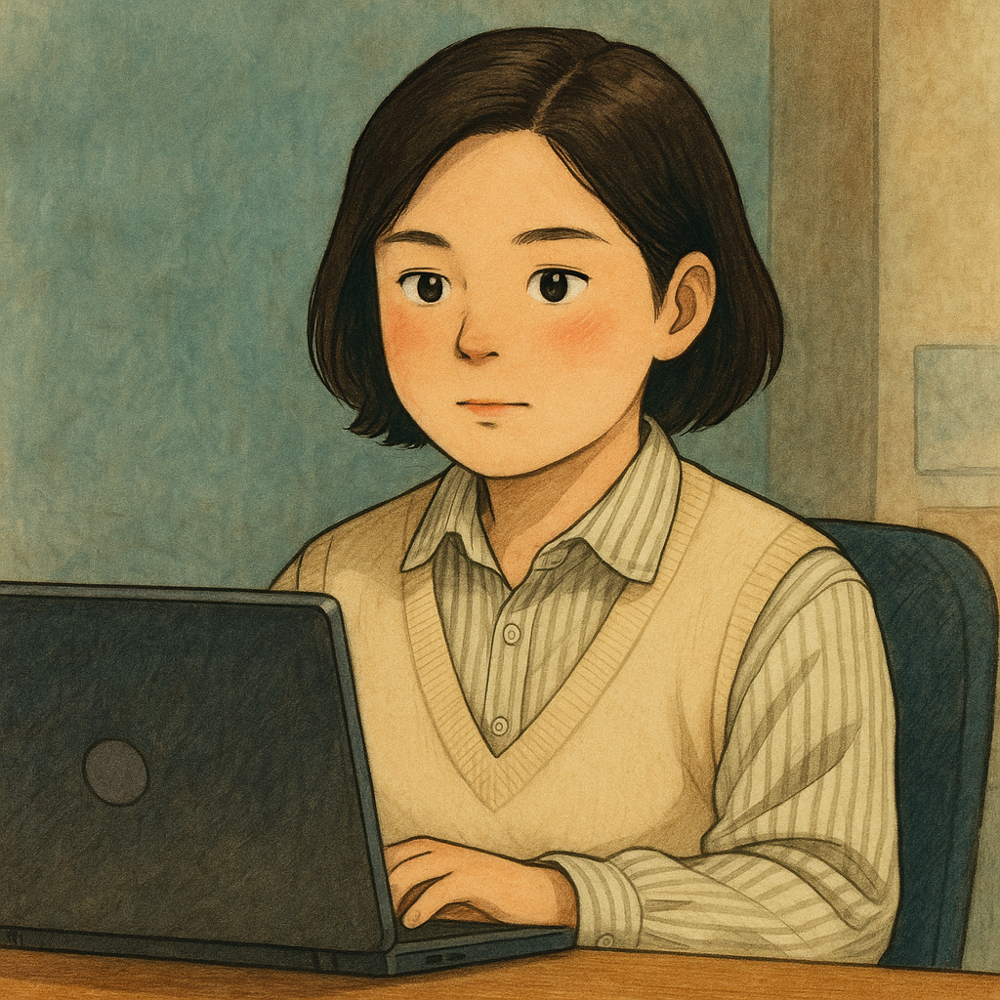

關於我

嗨，我是泳鳳，一位正在學習前端開發的自由靈魂。✨
目前專注於前端開發與網頁設計，也擁有文書處理、影片剪輯與電商經營的經驗。
雖然現在作品還不算多，但每一個都是我親手完成、一步步摸索累積的成果。📖
我熱愛設計整潔有溫度的介面，享受寫出功能清晰的小工具，也希望能透過程式和設計，實現自己的理想工作狀態。
正在努力讓自己的作品集一點一滴成長中，也期待能有機會和你一起合作、共創出色的畫面與故事！🌱
擅長使用 HTML、CSS、JavaScript，正在學習 Git、Figma、以及 GitHub Pages 部署，歡迎一起交流成長。
— 讓程式設計和設計風格，成為生活的一部分。